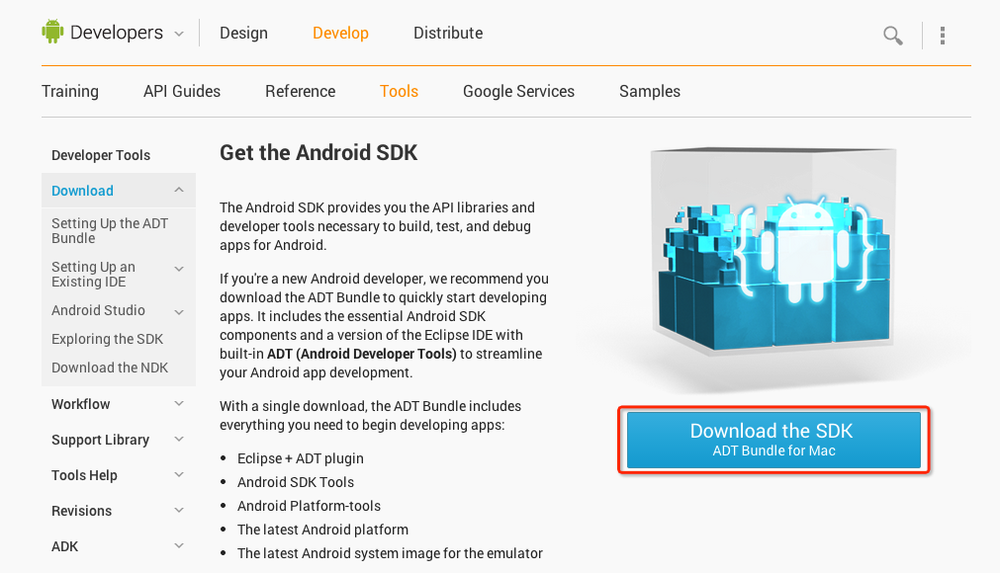
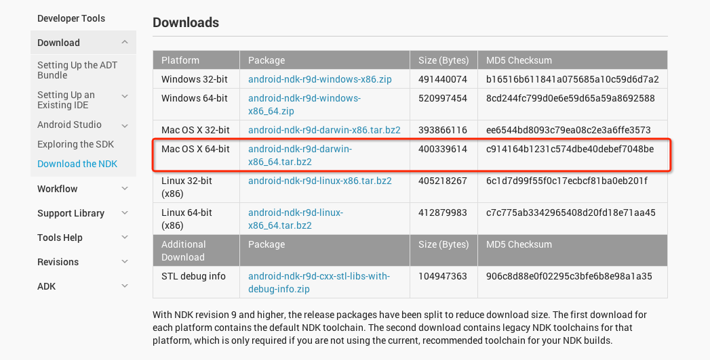
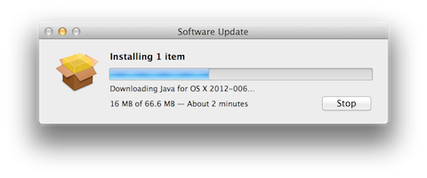
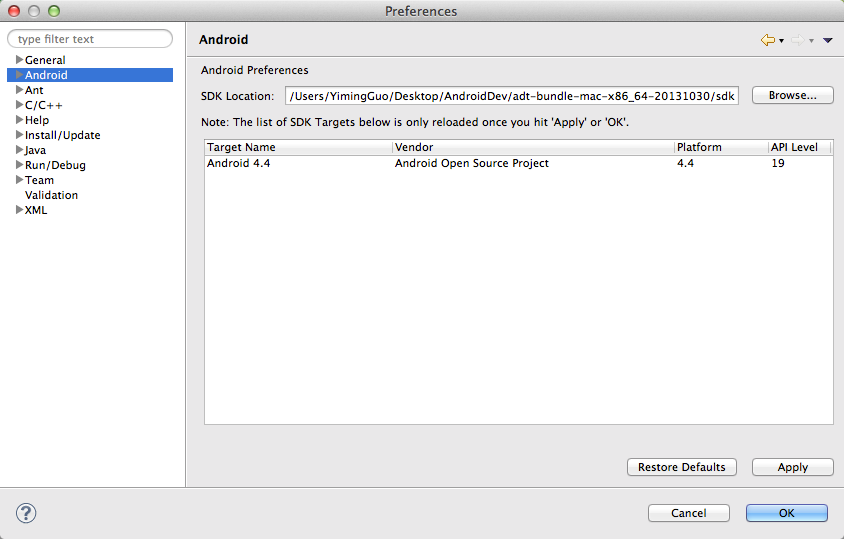
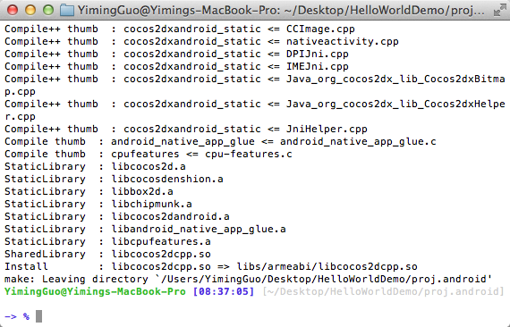
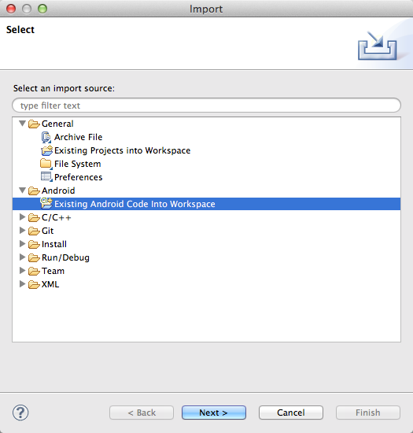
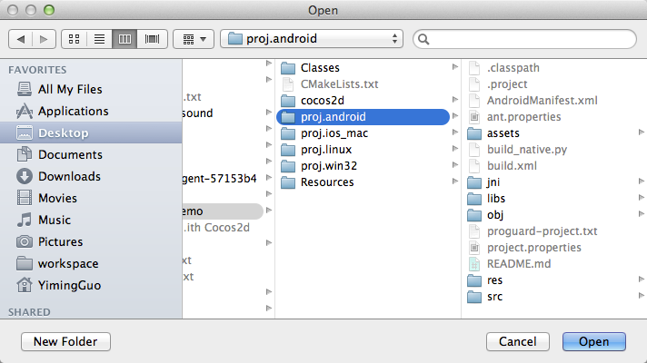
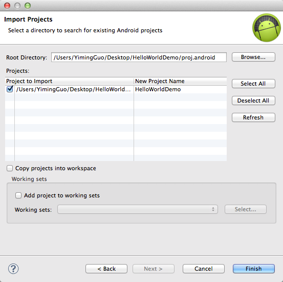

Mac搭建Cocos2d-x v3.2alpha0 Android开发环境
准备工作
到Cocos2d-x官方网站下载最新版本v3.2alpha0
到Android官方网站下载Android SDK

最后还需要在Android官方网站下载Android NDK

JDK
检测JDK是否安装，版本是否大于1.6.0。打开终端，输入：
1java -versionMacOS X会自动下载JDK，如图所示。

你会看到如下所示信息：
java version "1.6.0_37"
Java(TM) SE Runtime Environment (build 1.6.0_37-b06-434-11M3909)
Java HotSpot(TM) 64-Bit Server VM (build 20.12-b01-434, mixed mode)检查完后，便可开始设置Mac的Android开发环境。
配置Android SDK环境
解压ZIP文件（名字为“adt-bundle-
打开adt-bundle-

在MBP Retina电脑中安装Eclipse
如果你用的是配备Retina显示屏的MacBook Pro电脑，注意原装Eclipse不支持Retina显示屏，但是可以使用简单的技巧启动Retina支持功能。（本方法来自：https://bugs.eclipse.org/bugs/show_bug.cgi?id=382972）
- 在Eclipse.app上执行“Show package contents”
- 编辑Contents/Info.plist文件。
- 就在以下代码上方
</dict> </plist>增加以下代码
<key>NSHighResolutionCapable</key> <true/> - 将Eclipse.app应用移至一个新文件夹（清除OS X中info.plist文件的缓存），然后再移回旧文件夹。 5．启动Eclipse即可，已支持Retina显示屏。
打开Eclipse，选择”ADT->偏好设置”，然后选择Android项来指定Android SDK的安装目录。如下图所示：

配置NDK环境
将iOS项目源文件编译成项目时需要用到NDK来生成native文件。
先解压下载的NDK和ADT放在同一个父文件夹里。
按如下操作添加NDK环境变量：
export NDK_ROOT="/Users/yiming/Desktop/android-ndk-r9"重启终端。
创建HelloWorld项目
将刚才下载的压缩包解压到你指定的文件夹里。
进入到目录cocos2d-x-3.2alpha0/tools/cocos2d-console/bin/cocos.py
打开终端运行cocos.py脚本创建文件
./cocos.py new HelloWorldDemo -p com.coco2dx.org -l cpp -d ~/Desktop
或者
python cocos.py new HelloWorldDemo -p com.coco2dx.org -l cpp -d ~/Desktop参数说明：
- HelloWorldDemo为项目名称
-p后面接包名-l后面接开发语言类型，有cpp, lua, js三种类型-d后面接项目存放的目录
生成Android项目文件
执行HelloWorldDemo/proj.android下的build_native.py脚本进行编译

编译成功！
并将HelloWorldDemo/cocos2d/cocos/2d/platform/android/java/src/org/cocos2dx/lib文件夹拷贝到HelloWorldDemo/proj.android/src/org/cocos2dx下。
导入Android项目到Eclipse
通过导入一个已存在的Android项目的方法将生成的HelloWorldDemo导入到Eclipse中如下：



你可能看到如下错误提示:
The import org.cocos2dx.lib cannot be resolved HelloWorld.java /HelloWorld/src/com/young40/test line 26 Java Problem Cocos2dxActivity cannot be resolved to a type HelloWorld.java /HelloWorld/src/com/young40/test line 30 Java Problem Cocos2dxActivity cannot be resolved to a type HelloWorld.java /HelloWorld/src/com/young40/test line 33 Java Problem你需要将
/opt/cocos2d-2.1beta3-x-2.1.1/cocos2dx/platform/android/java按照上面的方法导入到Eclipse里面。然后在HelloWorldDemo项目上单击右键刷新，错误就会消失。
将您的手机设置成调试模式并用USB线连接到电脑, 在Eclipse中运行HelloWorld, 然后就能在手机上看到已经运行的HelloWorld了！